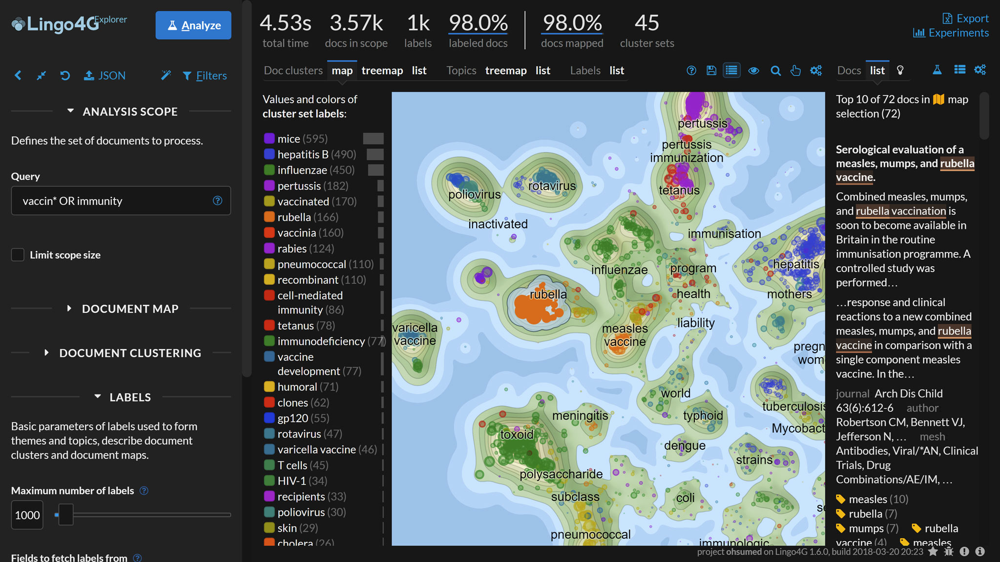

Use plain, semantic HTML to write your documentation. APIdocs will take
care of ToC generation, code highlighting, image processing and full-text
search.
Page outline
Below is the outline of a typical APIdocs page.
Page title
Introduction.
Section 1
Section 1 content.
Section 1.1
The outline of a typical APIdocs HTML page source.
Here are some rules about the structure of page HTMLs:
In most cases, each APIdocs page will be an article covering a specific
aspect of your software.
The root element of each page HTML file must be an HTML article.
Each article must have a child h1 element
containing the article's title. APIdocs will use its contents to
refer to the page in navigation links.
Use HTML section tags to divide your article into sections.
Put section titles in HTML heading tags (h2, h3 etc.)
inside the section tag. Do not use heading tags outside of sections.
If you would like a section to appear in the per-article table of contents,
add an id attribute to that section. Additionally, sections
with id attributes will have their heading submitted to the
search index.
Text elements
Use typical HTML text elements as you'd normally do in a regular HTML page.
Use p to delimit paragraphs, ul and ol
for lists, ul for definition lists, strong and em for emphasis.
Some notes regarding text elements:
The search index uses paragraphs as the basic indexing unit. Keeping
paragraphs short will not only make them easier to read, but also improve
the search experience.
Do not use strong and em tags outside of
paragraphs. Otherwise, their contents will not be indexed by the
search engine.
For lists with short entries, put the text directly in the li
tags. For lists with longer entries, put one or more p
paragraphs inside the li. Both variants are handled
by the search engine.
Links
Use HTML a tags to link to other pages of your documentation
or to external resources.
Use relative href attributes to link to other pages
of your documentation. APIdocs will rewrite such links to point to the final page URLs.
Use img tags to embed images in your documentation. APIdocs
will turn each such element into a responsive image that scales to take
the whole width of the page. We will also generate optimized versions
of the image in different resolutions, so that the appropriate version
can be served depending on the user's device and viewport size.
Like with code examples, you can wrap an img tag in a
figure and provide a figcaption to have the
image described and treated specially in search results.
The following markup:

A 2d map visualization of 3.5k medical paper
abstracts related to vaccines produced by
Lingo4G and visualized by dotAtlas.
Textually-similar abstracts are clustered together
on the map. The panel on the right shows the top abstracts
lying in the map region described as measles
vaccine. Phases specific to the selected
map region are highlighted in the text of the abstract.
will render the following figure:
A 2d map visualization of 3.5k medical paper abstracts related to
vaccines produced by Lingo4G and visualized by dotAtlas.
Textually-similar abstracts are clustered together on the map. The
panel on the right shows the top abstracts lying in the map region
described as measles vaccine. Phases specific to the selected
map region are highlighted in the text of the abstract.
Warnings
Use a div with class name warning to generate
a warning box. A standalone strong tag can serve as the heading of the warning.
Warnings in search results.
Warning boxes get a special icon when presented in search results.
Type warning in the search box to find out.